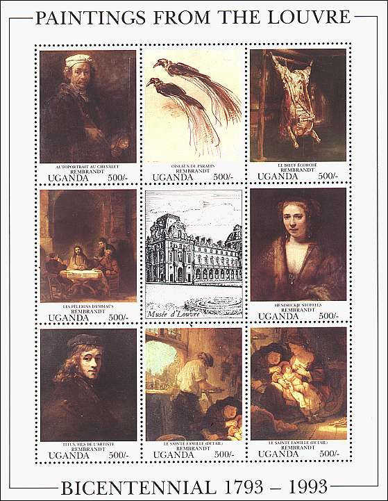
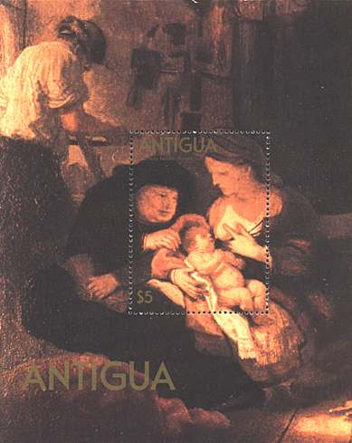

Rembrandt Paintings from the Louvre

On the above souvenir sheet is reproduced the work: Philosopher in Meditation. Sc. 1126. The below sheetlet is very nice, but will take some time to download. Please be patient, you will be recompensed for that.

The sheetlet shows the following Rembrand's paintings or details of them:
Self-portrait with an Easel. Sc. 1125a
Birds of Paradise. Sc. 1125b
The Beef Carcass. Sc. 1125c
The Supper at Emmaus. Sc. 1125d
Hendrickje Stoffels. Sc. 1125e
Titus, the Son of the Artists. Sc. 1125f
The Holy Family (left). Sc. 1125g
The Holy Family (right). Sc. 1125h
